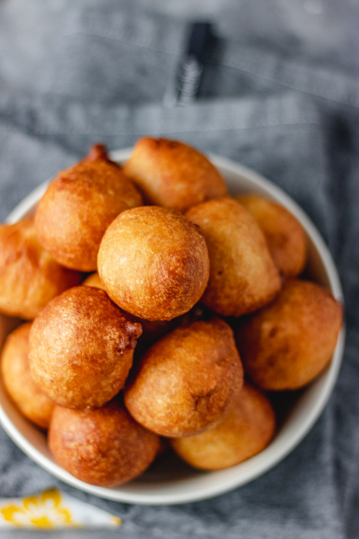

FRIED RICE RECIPE

Nigerian Fried Rice
Puff puff is one of the favorite snacks for Nigerians and popular street food. It is not only eaten as a snack alone, but you can also eat it any time of the day. I make it a lot and I mean a lot to a point that I recently told myself I won’t make it for at least another month. Nigerian Puff puff has always been my weakness and I need a detox.
Puff puff is very easy to make and you can always put your signature on it. I always add chilli pepper to mine and it’s always nice and fluffy. I also enjoy it with pepper sauce
Ingredients
- 600g all-purpose flour
- 10g fast action yeast
- 150g sugar (use as desired)
- ½ tsp salt
- 550-650g Lukewarm Water
- 1-3tbsp chilli flakes (substitute with cayenne pepper)
- Vegetable oil for frying
Steps
-
In a shallow bowl, add flour and salt together (combine salt with flour first)
-
Add other dry ingredients and combine well
-
Add lukewarm water to the dry mixture in bits to form a batter. You can add 500g at first then check if it needs more water. (the batter should not be runny and it shouldn't be thick as well, find a balance in between the two)
-
Cover the bowl with a cling film or a damp towel and place in a warm place to proof. (Till batter doubles in size usually between an hour or two. You can leave it longer if you want)
-
Once the mixture has risen and doubled in size, you then move on to frying.
-
People always find scooping batter in oil very tricky but I tell you it is very easy.
on medium-high heat, add enough oil to a frying pan and heat till hot. Drop a tiny bit of batter in hot oil to test and if the batter floats to the top of the heat then it is ready to use.
-
Get clean water in a bowl. Get clean water in a bowl
-
Dip your hand in batter, draw the batter towards the bowl and yourself. Keep the batter in between your fingers and palm
-
Squeeze batter in-between your palm and allow it to drop freely into the oil
-
Don’t overcrowd the oil. The batter should float to the top of the oil, this is where the magic start, I just love the bits when the puff puff starts turning in the hot oil (reduce the heat a bit at this point so that puff puff can fry through and be well done)
-
Fry puff puff on both sides till golden brown
-
Repeat the process till you have exhausted the batter
-
And its done! Yaaaaay!!!!. Enjoy Yourself.
Home